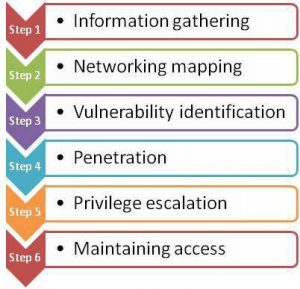

Навіщо вивчати хакерство?
Не плутати зі зловмисним «чорним» зломом, етичне «біле» злом (також називається
тестуванням на проникнення) визначає вразливі місця в безпеці мережі та виправляє діри в безпеці, перш
ніж хтось зможе ними зловживати.
Якщо ви
не розумієте, як хакери з чорним капелюхом можуть проникнути у ваші системи, вам буде важко захистити
їх. Навчання злому може допомогти вам застосувати найнадійніші методи безпеки. Це також стосується
пошуку та
усунення вразливостей безпеки, оскільки йдеться про їх передбачення. Дізнавшись про методи, які
використовують хакери для проникнення в системи, ви зможете вирішити проблеми, перш ніж вони стануть
небезпечними.
Перш за все, для успішного етичного хакерства потрібно бути майстром у вирішенні проблем. Важливо
також розуміти, як працюють комп’ютерні системи та мови програмування, оскільки легше передбачити
способи використання
система.
Важливість етичного хакерства
Жодне підприємство чи державна установа не можуть працювати без комп’ютерів і мереж.
Інформаційно-комп’ютерні технології (ІКТ) є однією з першочергових вимог скрізь. Однак чим більше
зростає залежність від технологій, тим більшою стає вразливість
збільшення. Скрізь панує страх перед кіберзлочинністю. Це може бути терористична організація або банда
поганих хлопців; він може викрасти ваші дані, пограбувати ваші фінансові активи, захопити ваш веб-сайт і
так далі. Після злому це майже неможливо
для відшкодування збитків. Тому безпека системи та мережі має бути на першому місці.
Хакери
атакують кожні 38 секунд. Фінансові втрати в усьому світі через кібератаку становитимуть дол
155 мільйонів до 2020 року. 68% мереж ще не захищені. Це лише деякі з причин важливості етичного
хакерства. Етичні хакери можуть врятувати компанії та уряди від непомірних втрат.
Робота пентестера
Робота етичного хакера або пентестера полягає в тому, щоб перевірити безпеку певної програми або мережі,
щоб знайти вразливі місця в безпеці, щоб їх можна було виправити, а не зловживати ними. Ось приклад
того, як проходить базовий тест на проникнення:

Навіщо сприймати це як свою кар'єру
Загалом етичне хакінгування має багато можливостей. Це може мати більший чи менший вплив на країну, в
якій ви живете, але це справді важливо. Це високооплачувана робота, якщо у вас є кілька років досвіду.
Його оцінюють приблизно в 120 тисяч доларів
рік. Станом на 20 січня 2023 року середня місячна оплата етичного хакера в Сполучених Штатах становить
9983 долари на місяць.
Тому попит на етичних хакерів і спеціалістів із безпеки постійно
зростає.
З чого почати
Цей посібник створено для початківців або людей, які тільки починають займатися хакерством і безпекою.
Підпишіться на нашу розсилку на сторінці контактів. Ви своєчасно отримуватимете
оновлення щодо наших нових посібників
та статті. Оскільки технології з часом застаріють, нові протоколи є обов’язковими, оскільки ми повинні
думати як люди зі злими намірами.